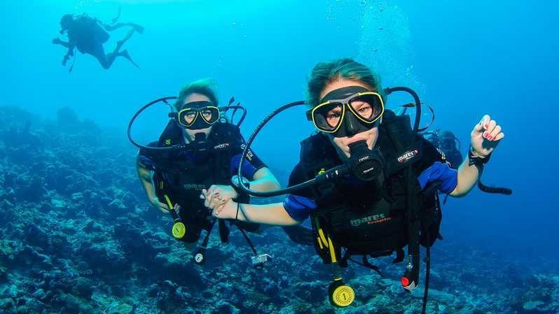

Dalgıç ve dalıcı arasındaki fark nedir?
Gerekli eğitimleri tamamladıktan sonra tüplü dalış sporunu sadece sportif amaçlı icra eden kişilere dalıcı, su altında bulunma durumunu bir meslek haline getirmiş, hayatının tamamını veya bir kısmını bu meslek sayesinde idame ettiren profesyonellere ise dalgıç denir. İngilizce kaynaklarda iki tanım da diver olarak adlandırılsa da Türkiye sınırları içerisinde bu iki sıfat arasındaki farklar sıkça karşımıza çıkmaktadır.

Nasıl dalıcı olunur?
Yazının önceki bölümlerinde belirtildiği gibi, Türkiye sularında yapılan tüm dalış faaliyetlerini düzenleyen, denetleyen kurum TSSF yani Türkiye Su Altı Sporları Federasyonu’dur. Türkiye’de tüplü dalış eğitimi almak isteyen bir kişi TSSF’nin onay verdiği eğitim merkezlerine başvurarak, yine TSSF’nin onay verdiği eğitim sistemlerinden birini (CMAS, PADI, SSI vb) seçebilir ve bu sistemin eğitimini alabilir. Her eğitim sisteminin kendi içerisinde farklılıkları bulunsa da hepsinde temel olarak;
Teorik bilgi,
Ekipman tanıma,
Su altı becerileri,
Basit seviye ilkyardım eğitimleri verilmektedir.
İsteyen herkes dalıcı olabilir mi?
Tüplü dalış sporuna ilgisi olan, 14 yaş ve üstündeki herkes dalış merkezlerine başvurabilir. Su altı, insan fizyolojisinin gündelik hayatından farklı şartlar barındırdığı için dalış merkezlerinin isteyeceği bir sağlık raporu ile bu şartlara uygunluğunu teyit ettirebilir ve dalıcı adayı olabilir. Bu aşamadan sonra yine dalış merkezinin yönlendireceği şekilde gerekli evrakları tamamlayıp, dalış eğitimini almaya başlamak için gerekli planlamayı dalış merkezi ile beraber yapabilirsiniz.
2017 verilerine göre, Türkiye’deki aktif lisanslı dalıcı sayısı yaklaşık 10.000 , aktif dalış merkezi sayısı ise 300 civarındadır. Bu dalıcıların birçoğu dalış ile üniversite dönemlerinde tanışmış ve bulundukları üniversitelerin su altı sporları kulüpleri ile kolayca dalışa adım atmışlardır. Eğer bir üniversite öğrencisi isen, mutlaka okuduğun üniversitenin sosyal kulüpleri arasında su altı sporları kulübü olup olmadığını kontrol etmeni ve eğer varsa iletişime geçmeni tavsiye ederiz.